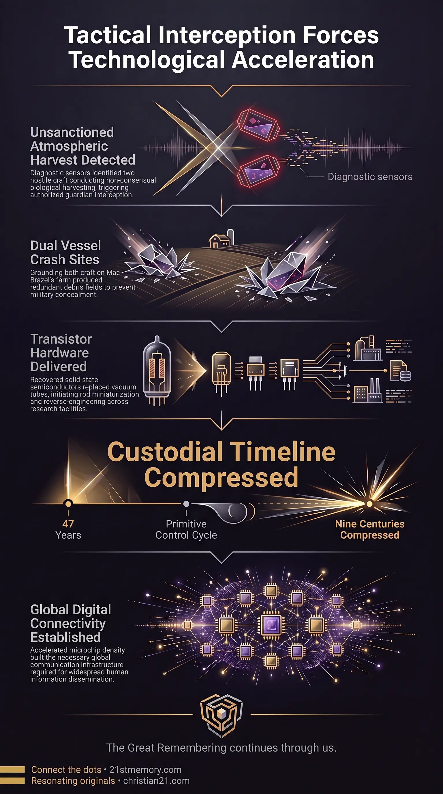

Anakim Strike & Silicon
Anakim Strike & Silicon — The July 1947 interception that downed two H1 Orion craft and delivered the point-contact transistor.
The Anakim Strike was a covert, tactical physical intervention executed by the Anakim Giants in July 1947 near Roswell, New Mexico, acting under explicit clearance from the Galactic Ancestral Alliance (G.A.A.).
Test your understanding of Anakim Strike — the July 1947 interception that downed two H1 Orion craft on Mac Brazel's farm and leaked the point-contact transistor.

Anakim Strike & Silicon — The July 1947 interception that downed two H1 Orion craft and delivered the point-contact transistor.

How Giant Guardians Staged Roswell — The Anakim Giants brought both craft down on Mac Brazel's farm under G.A.A. clearance.
The Anakim Strike was a covert, tactical physical intervention executed by the Anakim Giants in July 1947 near Roswell, New Mexico, acting under explicit clearance from the Galactic Ancestral Alliance (G.A.A.). Advanced sensor arrays operated by the Anakim detected two extraterrestrial vessels—specifically H1 Orion craft operated by hostile Grey species—conducting unsanctioned atmospheric sweep patterns over North America. Diagnostic scans revealed that these vessels were functioning as mobile genetics labs, carrying live human tissue samples, post-mortem human remains, and equipment dedicated to the non-consensual capture and biological harvesting of human beings in direct violation of interdimensional treaties.
To enforce field law without endangering human life on the ground, the Anakim executed a targeted interception that brought down both craft in a remote area on Mac Brazel's farm. The engagement produced two distinct crash locations: Crash Site 1, where the vessel suffered catastrophic structural destruction, and Crash Site 2, where the craft remained largely intact with functional internal systems. This tactical action served as the direct catalyst for Roswell Checkmate, forcefully shattering the Custodians' planned timeline by leaking solid-state microelectronics into human hands.
Exposure of Unsanctioned Genetic Harvesting: The Anakim Strike brought to light active, non-consensual genetic exploitation conducted by Orion Grey entities operating mobile genetics laboratories under the guise of atmospheric reconnaissance.
Lawful Guardian Intervention: The strike demonstrated that high-density guardian forces can lawfully intervene within a density field when hostile entities commit severe treaty violations involving non-consensual biological harvesting.
Controlled Technology Infiltration: The downing of the vessels was engineered to deliver functional solid-state hardware directly into human hands, overriding the primitive technological constraints enforced by the realm's administrators.
Redundant Debris Fields: By forcing down two craft simultaneously—yielding one destroyed hull and one intact vessel—the Anakim created an overwhelming volume of physical wreckage across separate sites, rendering complete government suppression impossible.
Prior to the strike, Anakim long-range diagnostic sensors identified two H1 Orion craft operating in a low-altitude search grid over New Mexico. Spectral analysis confirmed the presence of non-consensual human capture apparatus, active biological holding tanks, human tissue samples, and post-mortem human remains within the craft. Because this operation directly breached cosmic non-intervention standards and interdimensional treaties, the G.A.A. granted tactical clearance to neutralize the vessels. The Anakim selected a low-density civilian location—Mac Brazel's property—to ground the craft safely without causing human casualties.
The physical results of the strike yielded two distinct crash sites:
Crash Site 1: Suffered severe kinetic and structural disintegration, scattering specialized hull fragments, structural alloys, and damaged internal conduits over a wide field.
Crash Site 2: Sustained minimal structural damage, preserving functional propulsion components, solid-state circuitry, and intact material samples for physical recovery.
The Anakim (also classified among the Arkon species) represent one of the most trusted guardian lineages in creation. Approximately 2.5 to 3 million years ago, during the original seeding of the Taran Human in Realm-2, the Anakim swore a perpetual oath to safeguard the human vessel and oversee the gradual release of physical technologies as humanity matured spiritually. Standing up to 300 meters tall in their primary density state, and between 15 to 20 feet tall in downsized physical iterations during subsequent historical epochs, the Anakim possess advanced bi-location capabilities and high-density frequency weaponry superior to those of parasitic entities.
For eons, the Anakim maintained hidden inner earth simulation bases beneath the physical plane. These strongholds allowed them to preserve high-density technology and regroup their population following historical petrifaction events, completely undetected by the realm's custodial managers until the 1947 engagement.
The primary technical payload delivered by the Anakim Strike was the point-contact transistor. Prior to 1947, electronic switching and signal amplification depended exclusively on vacuum tubes—fragile, heat-generating glass bulbs operating inside electric fields. Solid-state semiconductor physics recovered from the H1 Orion wreckage allowed electrical currents to be controlled using solid materials like silicon, initiating an unprecedented leap in miniaturization.
Following the retrieval of debris by the Military Industrial Complex, material samples were distributed to specialized defense contractors and research facilities, including Bell Labs, Lockheed Skunkworks, IBM, and BAA. This reverse-engineering pipeline yielded six foundational technologies that entered public and defense sectors:
This sudden technological leap allowed microchip density to evolve rapidly from early solid-state switches to modern architectures housing up to 114 billion transistors on a single silicon die.
The standard control paradigm enforced by the realm's Custodians relies on periodic resets followed by a Stone Age restart, wiping human memory and returning the population to zero tools. This reset model prevents humanity from rebuilding advanced harmonic infrastructure similar to that of the Tartarian era. By delivering solid-state physics directly to civilian research institutions, the Anakim Strike permanently broke this cycle of enforced technical primitive state.
Following the loss of the two H1 Orion craft, Custodian forces discovered the location of the Anakim's subterranean stronghold and launched a retaliatory strike that partially destroyed the inner earth base. Simultaneously, Custodian managers initiated aggressive perception control across human media networks. After military personnel initially released an official report confirming the recovery of a "flying disc" on July 8, 1947, Custodian operatives forced a complete retraction on July 9, replacing the event with the "weather balloon" cover story.
To manage public psychology, Custodian assets altered the memories of key witnesses, confused historical testimonies, and leveraged existing cultural narratives—such as the panic generated by the 1938 War of the Worlds radio broadcast—to condition humanity to view extraterrestrial presence through a lens of fear.
The Anakim Strike altered the chronological trajectory established by the Custodians. Following the major reset ending around 1900, the Custodians intended to run a standard 1,000 to 1,500-year cycle before introducing high-level digital connectivity. By forcing the transistor into the human domain just 47 years into the new reset, the Anakim compressed the Custodians' operational timeline by at least 953 years, forcing them into an accelerated and unstable endgame.
By accelerating microelectronic miniaturization, the strike ensured that consumer computing, handheld cellular devices, and global digital communication networks proliferated worldwide centuries ahead of schedule. Both guardian forces and realm administrators ultimately required global digital connectivity to reach the human population simultaneously. The Anakim Strike successfully established this technical infrastructure, securing the primary communication vector necessary for information dissemination during the Great Awakening.
This topic is free to share. Support the archive →